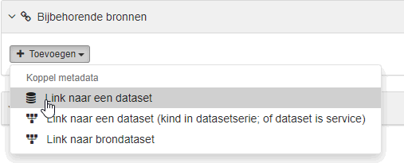

Changelog
20/10/2020
- Fixed a bug where a dct:identifier was added when clicking on the + button to add a keyword
- Fixing few translations: labels sometimes starting with lower case, sometime with upper-case => All changed to
upper-case
- Fixed a bug where the content of vcard:hasUrl was edited instead of the vcard:hasUrl/@rdf:resource attribute
- Better indexing for the services metadata for fields
- dcat:servesDataset
- dcat:endpointUrl
- dcat:endpointDescription
- dcat:landingPage
- Improve view:
- dcat:endpointDescription is now displayed. If it contains links, they will be clickable
- Added missing translations for the side bar
- Fixed styles for nested tables
- Update schematron rules to prevent error when editing a services (error of type "dcat:dataset is a required
property…") allowing to have valid service records
- Added schematron validation rules for
- dcat:endpointUrl
- dcat:DataService/dcat:contactPoint
- dcat:servesDataset
- dcat:landingPage
- Added the @rdf:about attributes on dcat:DataService schema and handle it when creating a new service record
14/10/2020
- New elements have been added to the XSD and the editor. Here is the list of all the editable fields for dcat-ap
services metadata:
- dct:identifier
- dct:title
- dct:description
- dcat:endpointUrl
- dcat:endpointDescription
- dcat:servesDataset
- dcat:landingPage
- dcat:contactPoint
- dcat:keyword
- dct:language
- owl:versionInfo
- Translations have been fixed for existing fields and added for the new ones
- We can now couple a dataset to a service via the search box. Doing so will add a new dcat:servesDataset element
pointing at the dataset. (Please notice that this must be done by clicking the first "Link naar een dataset"
button
in the dropdown of the "Toevoegen" button. The two others button in this dropdown must be evaluated and maybe
removed).

- The coupled dataset will be displayed in the editor and in the view as a related dataset (on the right side bar)
- The title and the description of services are now displayed in the search and view pages (instead of a blank
lines). The rest of the view was not changed yet; which mean that some field might be missing from the view.
- Modified the template for services to add the new elements. However, this is not necessary to recreate existing
metadata from this template. The new elements can be added via the + button in the editor.